Апсида (=абсида)
Примыкающий к основному объему здания пониженный выступ полукруглой, граненой либо сложной формы в плане; этим термином почти всегда обозначаются лишь алтарные объемы.
На протяжении истории древнерусского зодчества создавалась совершенно разная по назначению, стилю, устройству архитектура. Условно всю её историю можно разделить на три части:
Коллаж из разных фотографий. Название см. по клику
При составлении данного словарика был использован другой принцип: деление на деревянный и каменный типы строительства, а также на типы по предназначению зданий. В целом мы следовали логике книги "История русской архитектуры" Пилявского В. И., Тица А. А., Ушакова Ю. С.
Коллаж из разных фотографий. Название см. по клику

рис. 1 Церковь Воскрешения св. Лазаря на острове Кижи, Республика Карелия (Россия). XIV век (по преданию)
Фотограф А.Савин, Википедия, 2017.
Леса, строительный материал для деревянных построек, покрывали большую часть земель Киевской Руси и все земли Великого Новгорода, Владимиро-Суздальского, Тверского и Московского княжеств. Это предопределило главенствующую роль дерева в зодчестве Древней Руси: первые постройки такого типа появились задолго до каменных и кирпичных. Дерево было легко обрабатываемо и доступно самым широким слоям населения Руси, и сохранило свой статус основного строительного материала вплоть до XVIII в.

рис. 2 Часовня Михаила Архангела, из д. Леликозеро (Леликово). XVII век
Фотограф: Александрова Елена, Википедия
Между тем, два качества дерева не позволяют заглянуть в древнейшие периоды развития русского деревянного зодчества: это горючесть и недолговечность. В современности не сохранилась ни одна деревянная постройка, срубленная ранее XVI в. Редкие жилые дома имеют возраст свыше 100 лет, храмы - свыше 300 лет.
В исследованиях источниками служат летописи, миниатюры, писцовые книги, иконы.
В строительстве наибольшее распространение получили хвойные породы: сосна, лиственница, ель. Их положительными качествами были прямизна и отстутствие дупел, это позволяло собирать из бревен стены, а смолистость пород обеспечивала хорошую сопротивляемость гниению. Кроме того, для разных нужд могли использоваться: прямослойный дуб (в южных районах), осина (для кровельного лемеха). Главным орудием производства русского плотника был топор и его разновидности.
Главая конструктивная форма в русском деревянном зодчестве - прямоугольный сруб, называемый четвериком, из горизонтально сложенных и притесанных друг к другу бревен. Их складывали горизонтально, т.к. при усхании вертикально врытых бревен между ними возникали щели.
В углах срубов бревна соединялись с помощью врубок. Чаще всего применялась врубка с остатком ("в обло"), реже - без остатка ("в лапу"). После пазы прокладывались мхом и конопатились паклей.
Разметка будущего здания происходила путем выкладывания нижнего венца сруба - "оклада".

рис. 3 Конструктивные части строительства. Схема по материалам книги "История русской архитектуры" Пилявского В. И., Тица А. А., Ушакова Ю. С.
Кровли у древнерусских деревянных зданий также могли быть разными: самый простой тип - на два ската, либо на два ската с полицами (т.е. с переломом кровли). Зодчие могли придать крыше криволинейное очертание с килевидным завершением, которое называлось бочкой. Квадратные же в плане постройки перекрывались нередко на восемь скатов, либо пересекающимися бочечными кровлями.
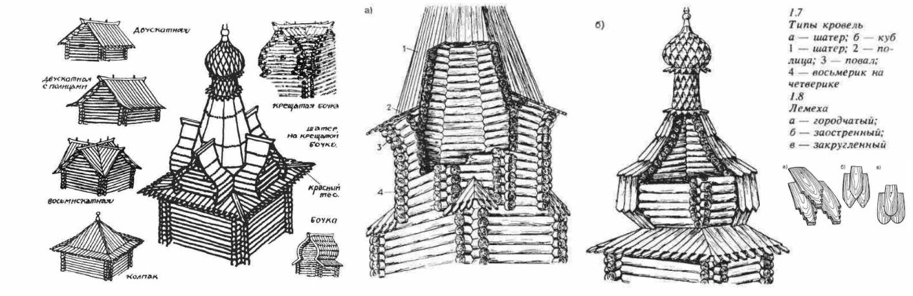
рис. 4 Типы кровель. По материалам книги "История русской архитектуры" Пилявского В. И., Тица А. А., Ушакова Ю. С.
Четвериковые (квадратные) и восьмериковые (восьмигранные) здания могли перекрываться пирамидой, носящей название "колпака", а более высокие - шатром. Над некоторыми срубами устраивался также "куб" - шатер с криволинейными очертаниями, напоминающими профиль бочки. В храмах шатры и кубы завершались главой, граненой либо покрытой лемехом (короткими дощечками, способными окрывать и округлые формы (бочки, кубы, шеи, главы). Кровли жилых домов могли быть построены без дорогостоящего железа, т.е. без гвоздей. Для этого у древнерусских зодчих существовала собственная, уникальная технология.
В ІХ-Х вв. на Руси заканчивался процесс разложения родоплеменного строя и сложения классового общества. Вместе с классовым обществом происходило становление государства. К концу X в. древнерусское государство - Киевская Русь — приобрело уже законченные формы. Естественно, что появление государства должно было вызвать резкие изменения всей идеологической надстройки. Должна была измениться и ведущая идеологическая сила средневековья — религия. На первых порах князь Владимир Святославич сделал попытку объединить племенные языческие культы и оформить общерусскую языческую религию. Но язычество, сложившееся еще в недрах доклассового общества, очевидно, не могло отвечать новым запросам.
Между тем рядом с Русью находилось мощное государство - Византийская империя, где все идеологические формы, соответствовавшие феодальному строю, уже были разработаны полностью. Эти формы Русь могла заимствовать в готовом виде. В установлении тесных связей были в равной мере заинтересованы обе стороны, как Русь, так и Византия. Русь получала идеологические формы - религию - и связанные с ней литературу и искусство, необходимые для утверждения и укрепления государственной власти. Из Византии поступали и некоторые товары, в первую очередь предметы роскоши, в которых нуждался сложившийся на Руси господствующий класс. Византия же была кровно заинтересвана в военных силах Руси, обеспечивавших безопасность ее северных границ от вторжения кочевников.
В 989 г. русское войско в составе византийской армии помогло императору подавить восстание Варды Фоки, а князь Владимир вторгся в Крым и привел в подчинение отложившийся от императора главный город византийского Крыма - Корсунь. Союз был скреплен браком русского князя с византийской царевной, вместе с которой на Русь прибыли священники для установления новой религии. Принятие Русью христианства было несомненно прогрессивным явлением, поскольку христианская религия хорошо отвечала задачам, которые стояли в области идеологии перед сложившимся молодым государством. А то обстоятельство, что христианство пришло в его восточном, византийском варианте, открывало Руси доступ к источнику наиболее высокой культуры тогдашнего мира, а вместе с тем и к источнику наиболее совершенного зодчества.
В 989 г., сразу же после установления на Руси христианства, приехавшими из Константинополя греческими зодчими в Киеве была заложена первая кирпичная церковь: князь Владимир «помысли создати церковь пресвятыя Богородица и послав приведе мастеры от грек». В 996 г. постройка была закончена и торжественно освящена. Князь Владимир даровал церкви «десятину своих доходов, отчего ее стали называть Богородицей Десятинной. Нельзя категорически утверждать, что Десятинная церковь была первой каменно-кирпичной постройкой, возведенной на Руси. В летописи имеется свидетельство, что в Киеве уже в 945 г. существовал каменный терем при княжеском дворце. Очень возможно, что терем был возведен византийскими мастерами для княгини Ольги после ее поездки в Константинополь. Однако среди раскопанных в Киеве древних сооружений ни одно пока не может быть достаточно убедительно сопоставлено с упомянутым в летописи теремом. Поэтому Десятинная церковь является древнейшей из известных нам монументальных построек Руси.
Основными строительными материалами при возведении монументальных сооружений (дворцов, церквей, ворот и пр.) были камень и кирпич. Из камня и кирпича на Руси строили главным образом храмы. Первые каменные храмы на Руси строились в период наивысшего расцвета древнерусской государственности и наибольших материальных возможностей заказчика. Для Киева и многих других городов древнерусского государства камень был привозным материалом. Его привозили подводе иногда за сотни километров — с Припяти, Поросья и др. В древнерусском строительстве X—XI вв. обычно применялся не тесаный, а колотый камень, который добывали в каменоломнях при помощи клиньев. Употреблялись главным образом мягкие породы камня — песчаник и известняк, но зачастую кладку фундаментов и стен вели из кварцита разных пород. В кладке (особенно со второй половины XI в.) использовался и булыжник. Из камня обычно возводили сплошь фундаменты. Фундаменты закладывались на различную глубину, в среднем на 90—120 см. Ширина фундаментов обычно не превышала 150 см.
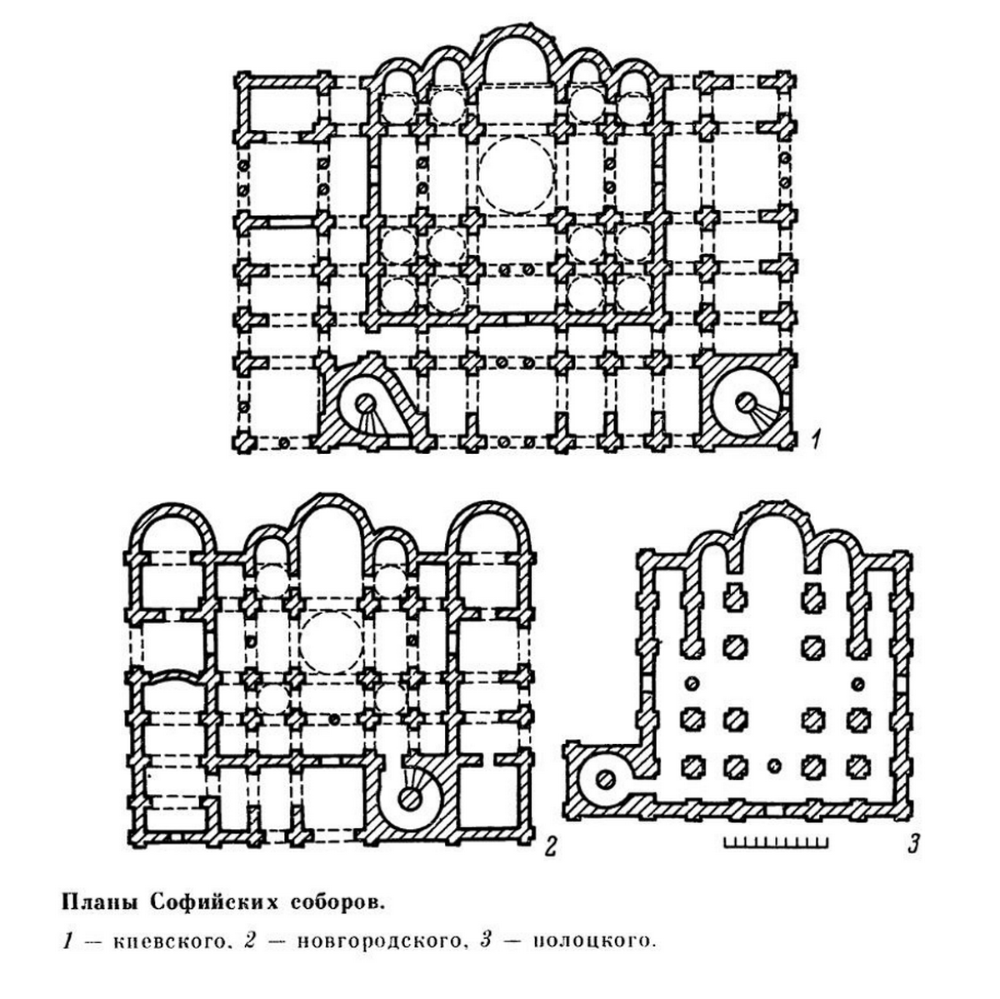
В кладке фундаментов, стен и сводов применялся известковый раствор с добавлением толченой керамики (цемянки), придававшей ему гидравлические свойства. Цемянка изготовлялась из боя, кирпича и отходов кирпичного производства. Кроме цемянки в известковое тесто иногда добавляли песок; при этом состав раствора определялся примерным соотношением 1:1:1 (известь—цемянка—песок). Толщина швов кладки обычно достигала 2—3 см. Такой раствор значительно меньше поддавался действию воды и влаги. Розовый цвет раствора, получавшийся в результате добавления цемянки, определял общий тон древнерусских каменных зданий. В древней Руси в X и XI вв. применялся почти исключительно цемяночный раствор, обеспечивший своими высокими техническими качествами прочность древнерусских каменных и кирпичных конструкций.
Кирпич (или, как было сказано ранее, плинфа) был основным материалом, применявшимся для возведения конструкций зданий, особенно тех, в которых действовали изгибающие усилия (столбы, арки, своды, купола и др.). Плоский прямоугольной формы кирпич (средние размеры 22 × 30 × 3 см) изготовлялся из огнеупорных глин, иногда местных, а иногда привозных.
Основными конструкциями древнерусского каменного зодчества X—XI вв. были полуциркульные арки, коробовые и купольные своды, которыми перекрывались все помещения. Арки, своды и купола обычно делали в один кирпич. Толщина сводов составляла обычно около 40 см. Исключительный интерес представляют конструкции аркбутанов — разгрузочных полуарок, известных в Софийских соборах Киева и Новгорода и, возможно, бывших в ряде других зданий того времени.
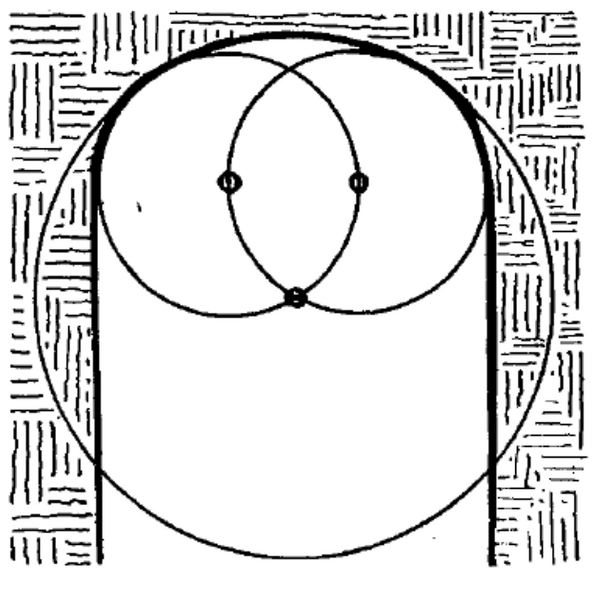
Русская архитектурная школа сформировала уникальные стилистические особенности, которые отличают её от западноевропейских традиций::
- Ассиметричность композиций
- Богатая декоративная отделка
- Комбинирование различных объемов
- Использование луковичных глав
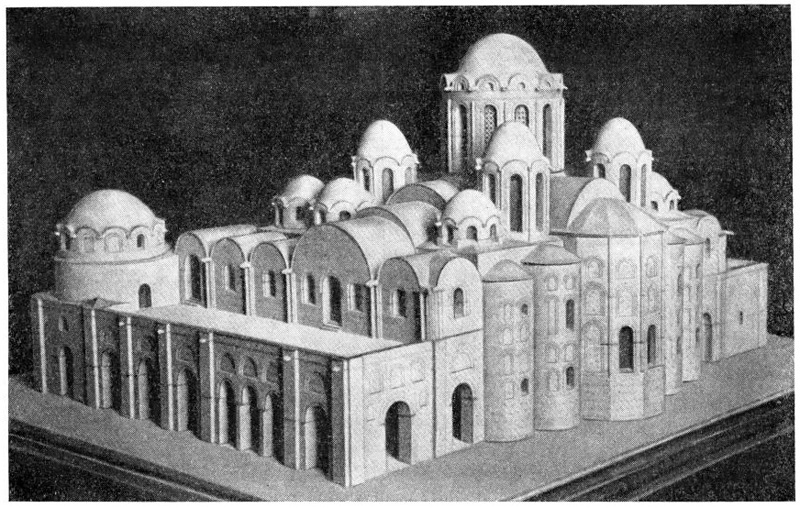
Киев. Софийский собор. Модель (реконструкция)
Глава «Архитектура Древнерусского государства (X – начало XII в.). Каменное зодчество второй половины XI – начала XII вв.». «Всеобщая история архитектуры. Том 3. Архитектура Восточной Европы. Средние века». Автор: Асеев Ю.С.; под редакцией Яралова Ю.С. (ответственный редактор), Воронина Н.Н., Максимова П.Н., Нельговского Ю.А. Москва, Стройиздат, 1966
АКАДЕМИЯ НАУК СССР, серия «Из истории мировой культуры». П. А. Раппопорт “Зодчество Древней Руси” (15-44 стр.)
В. И. Плужников “Термины российского архитектурного наследия”
Наиболее распространенным типом постройки из дерева был жилой дом. Такие здания изнашивались быстрее других сооружений, а потому даже в дореволюционных исследованиях не упоминаются избы старше конца XVIII в.
Чаще всего городской дом представлял собой односрубную четырехстенную избу с сенями. К этим двум элементам зачастую добавлялся третий - холодная "клеть" для хранения имущества и жилья в летнее время.
В более сложных решениях трехчастных посадских хором XII-XVII вв. по одну строну сеней устраивались горницы ("покои" - спальни): теплые - внизу, летние (они назывались еще "терема") - наверху, а по другую сторону в отдельном срубе - общее помещение для всей семьи, а также для приема гостей - "повалуши" (от др.-р. "повальный" - общий). В подклете размещались подсобные помещения - кухни, кладовые, бани.
Приемы хоромного строения, выработанные в деревянном зодчестве, позднее перешли в каменные здания XVI-XVII вв.
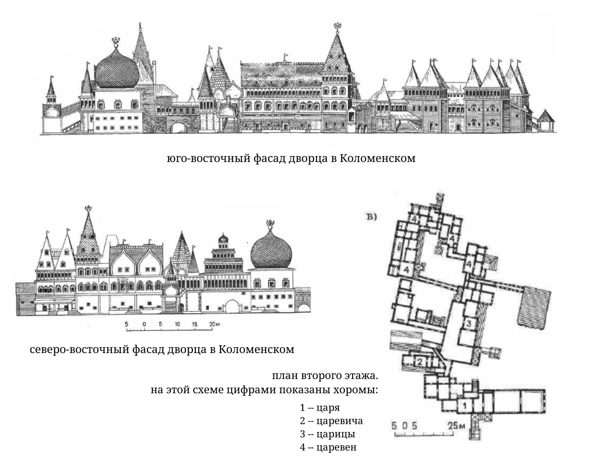
Дворец в Коломенском. По материалам книги "История русской архитектуры" Пилявского В. И., Тица А. А., Ушакова Ю. С.
До нашего времени не дошел ни один дворцовый деревянный комплекс, но документы, рисунки и сохранившийся макет детально знакомят нас с выдающимся произведением дворцовой архитектуры XVII в. - дворцом в селе Коломенском под Москвой.
В cостав Коломенского дворца входили семь хором. Переходы связывали хоромы между собой, а также с подсобными помещениями и дворцовой деревянной церковью. Каждые хоромы состояли из нескольких клетей со своими сенями и крыльцами. Клети хором венчались шатрами, простыми и крещеными бочками, кубами. Фасады и интерьеры были богато украшены росписью и резьбой.
здесь будет информация про каменные дома на Руси
Амбар - это холодное складское строение для хранения муки, хлеба или зерна.
Амбары чаще всего ставили в стороне от жилья и навиду для сбережения от огня. Зачастую их ставили рядом с мельницами.
Зерно нужно было проветривать снизу и оберегать от грызунов, и для этого клеть амбара ставили на одну или несколько опор. Иногда опорой служили высокие пни, иногда - четыре столба, которые не позволяли добираться грызунам. Могли возводиться амбары в два этажа, где на первом хранились сани или утварь, а на втором уже зерно.
Схематичное изображение амбаров, рисунок по "Истории русской архитектуры". Слева: на пне; справа: на столбах
Ветряные мельницы окружали крупные села кольцом в 20-30 штук. Чтобы мельница всегда стояла по ветру, необходимо было её вращать. Существовало множество различных типов мельниц, однако среди них можно выделить две основных разновидности: "столбовки" (были распространены на севере) и "шатровки" (на средней полосе и в Поволжье). В первом типе весь амбар вращался на врытом в землю столбе, а опорой служили дополнительные балки или клеть; во втором нижняя часть в виде восьмигранного сруба была неподвижной, а верхняя меньшая по размеру часть вращалась.
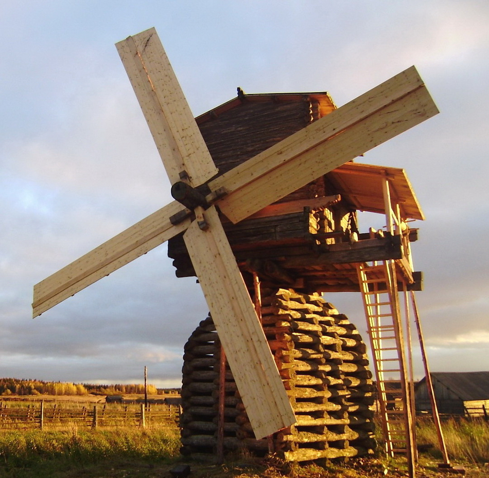
Мельница-столбовка Дерягина из деревни Кимжа. Фото: "Мельницы России"
Любой тип мельниц требовал точных и логичных расчетов; силуэты этих высоких зданий на фоне деревень играли немаловажную роль в ансамбле селений.
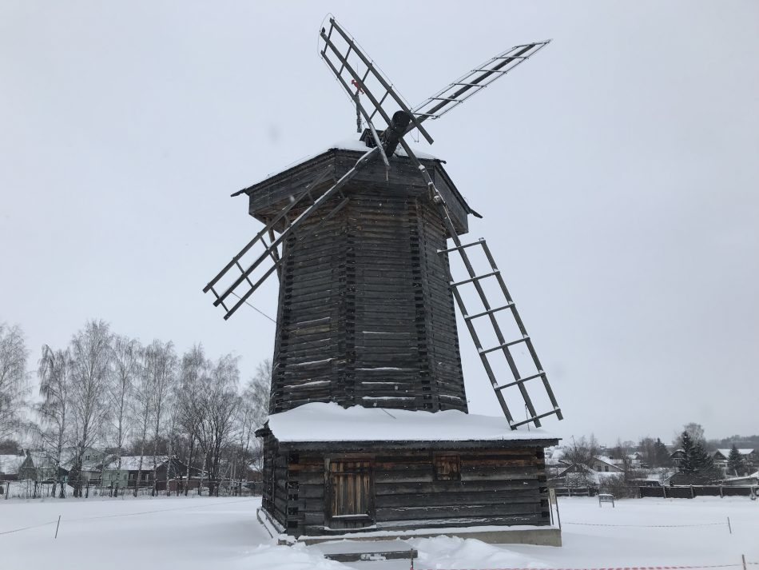
Мельница из деревни Мошок Владимирской области (музей «Суздаль»). Фото: "Мельницы России"
Церковь Покрова на Нерли была выстроена в 1165 г. поблизости от Боголюбова, при впадении р. Нерли в Клязьму, на конечном пункте речного торгового пути, который вел на восток, на Волгу. Монастырская церковь на Нерли отмечала подъезд к Боголюбову и Владимиру, архитектурно выделяя въезд в столицу. Хорошо сохранившаяся церковь искажена только поздним луковичным куполом и полусферической кровлей вокруг барабана .
При сравнении с другими храмами особенно заметны сильно выраженные вертикальные пропорции, придающие ей замечательную легкость и воздушность. В древности здание было окружено монастырскими постройками. Удивительно изящное и стройное сооружение прекрасно гармонирует с живописным окружающим пейзажем. Сложно наружное расчленение и архитектурная декорация стен, для которых характерны многоуступчатые лопатки, закомары, оконные и дверные проемы и большое количество колонок различных размеров.

Общая фотография церкви Покрова на Нерли. На заднем плане теплая Церковь трех святителей. Фотограф: Виктор Курков, 2011
Большие колонки, приставленные к наружным лопаткам, несли резные каменные водосточные сливы между закомарами; арочки фриза опираются на миниатюрные колонки, которые имеются в порталах, на барабане и на апсидах здания. Лопатки усложнены уступами прямо-угольного и закругленного профиля, что придает наружным стенам глубокий рельеф и насыщает их поверхности сочной пластикой.
Большую роль в композиции здания играют перспективные порталы, в которых богатая архитектурная декорация сочетается с величественной монументальностью.
Помещенные в полукругах закомар каменные рельефы, изображающие библейского царя Давида, играющего на музыкальном инструменте и окруженного слушающими его зверями, служат дополнительным средством усиления пластики стен. Эта наружная скульптурная декорация представляет собой одно из наиболее существенных новшеств в церковной архитектуре, которого нет ни в одной из местных школ русского зодчества того времени, исключением Галича, и которое впоследствии получило свое блестящее развитие в строительстве времени Всеволода за и его наследников. Рельефы уничтожают тяжесть стены, делают ее нарядной, воздушной и легкой.

Каменный рельф Церкви Покрова на Нерли. Фотограф: Виктор Курков, 2016
Сравнение архитектуры церкви Покрова на Нерли с современными им памятниками западноевропейской романской архитектуры наглядно обнаруживает превосходство высокого художественного мастерства владимирских памятников, обусловленное удивительно гармоническим равновесием архитектурных форм, глубоко отличных от сильных выразительных, но тяжеловесных и угловатых объемов романских зданий.

Церковь Покрова на Нерли. Фотограф: Виктор Курков, 2021
Успенская церковь в селе Варзуга, одном из девнейших поселений на Кольском полуострове, построена в 1674 г. Она представляет собой высокий четверик, к которому с севера, юга, востока и запада примыкают четыре прямоугольных прируба; над четвериком возвышается невысокий восьмерик с широким повалом, покрытый шатром. Каждый прируб покрыт тремя насаженными одна на другую бочками.
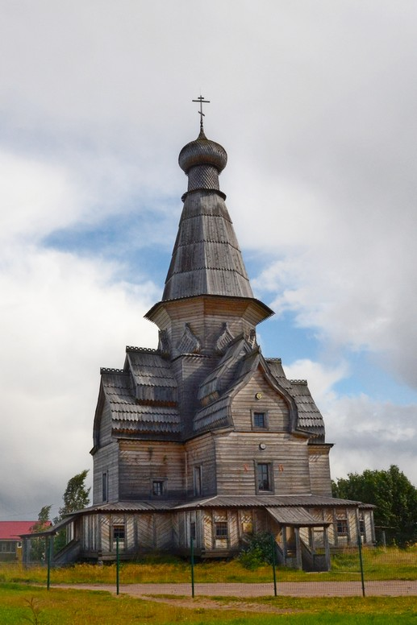
Современный вид церкви. Фотограф: Алексей Полудницын, 2020 sobory.ru
Ощущение необычайной высоты и устремленности вверх достигается умелым и пропорциональным сужением форм и сведением линий контура храма на верхней точке – кресте. Церковь никогда не отапливалась, и это, возможно, ее и спасло от случайного пожара. Вместе с тем, она была изготовлена таким образом, что в любую погоду в ней было сухо, не скапливался конденсат, и не появлялась плесень. Ее бревенчатый остов никогда не намокал и поэтому не гнил. Общая ее высота составляет 34 м, а во всех ее пропорциях заложен принцип «золотого сечения», делающий строение удивительно гармоничным, стройным и цельным.
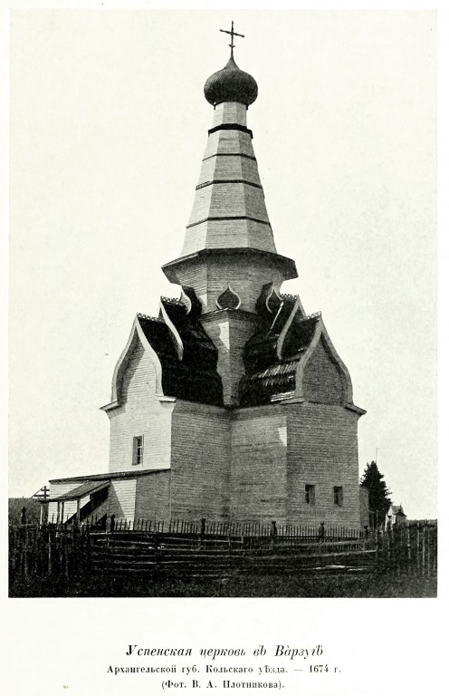
Фото из книги Грабарь И.Э. "История русского искусства." т.1 М 1910. sobory.ru
Источник: Плужников, Владимир Иванович. Термины российского архитектурного наследия : архитектурный словарь
Примыкающий к основному объему здания пониженный выступ полукруглой, граненой либо сложной формы в плане; этим термином почти всегда обозначаются лишь алтарные объемы.
Цилиндр или многогранник, завершающий объем здания и обычно увенчанный куполом либо главой.
Двускатное покрытие килевидного сечения, расширяющееся над основанием.
Восьмигранный архитектурный объем.
Купольное или многогранное покрытие барабана на культовой постройке.
Небольшая глава, обычно на шейке.
Полукруглое или килевидное завершение прясел церковного здания, примерно соответствующее кривизне закрываемого свода.
Сруб - деревянное сооружение без пола, перекрытий, лестниц, дверей, оконных рам, возведенное из горизонтальных брёвен или брусьев.
Крещеный с. имеет форму креста.
Верхний слой крыши.
1 Свод, поверхность которого образована вращением кривой вокруг вертикали.
2 Сфероидная эллипсоидная или граненая кровля, по силуэту близкая куполу (1).
Не имеющий базы и капители вертикальный ленточный выступ стены, разделяющий или ограничивающий ее поверхность.
Верхняя часть рубленых стен, плавно раскрывающаяся наружу путем напуска бревен друг на друга, каждый Венец делается больше нижележащего
Художественное обрамление входа.
Участок стены древнерусского каменного сооружения, ограниченный двумя лопатками, пилонами или башнями.
Крытая площадка наружной лестницы при древнерусском здании.
Наклонная поверхность кровли.
1 Средняя часть антаблемента.
2 Декоративно оформленная горизонтальная полоска.
Объем с прямоугольным планом (термин обычно относится к культовым постройкам).
Пирамидальное покрытие с крутыми скатами.
Сфера под крестом, венчающим храм, либо под металлическим прапором или силуэтной фигурой ангела, в завершении башни.
Бесчисленные города, отмечает историк Николай Костомаров (1817–1885), усевавшие пространство русских владений, были с укреплениями деревянными или земляными, то есть с валами и с тыном по валу. Сооружение деревянных, а не каменных укреплений на Руси не объяснялось бедностью или отсталостью городов. При отсутствии огнестрельного оружия деревянные стены были достаточной защитой против нападений. Как правило, городские укрепления включали в себя ров, стены из брусьев (брёвен) и вал. В больших городах они состояли из внутренней крепости – кремля, и наружных построек. На Руси кремль являлся изначальным ядром и центром тяготения всего городского организма, занимавшим главное место в его композиции. Он не противостоял городу, не выделялся из его общей оборонительной системы, даже главный въезд в него всегда был обращен к посадам и через них сообщался с внешним миром. В город вели ворота, количество которых зависело от размеров поселения. Главные ворота, как, например, в Киеве, Владимире и Новгороде, часто увенчивались надвратными церквями.
Материалы для стен:
- Дерево. Основным материалом для стен в Древней Руси было дерево, особенно сосна, которая использовалась для строительства жилых домов, храмов и оборонительных сооружений.
- Земляные валы. Остатки укреплений, когда при исчезновении конструкций стен остаются только массы заполнявшего их грунта, расплывшиеся после гибели деревянных конструкций. Разрушение стен происходило как в результате пожаров, так, и при естественном гниении венцов. От деревоземляных оснований укреплений со временем остаются только земляные валы.
- Деревоземляные сооружения. Некоторые постройки, такие как крепости и укрепления, представляли собой комбинацию деревянных конструкций и земляных насыпей.
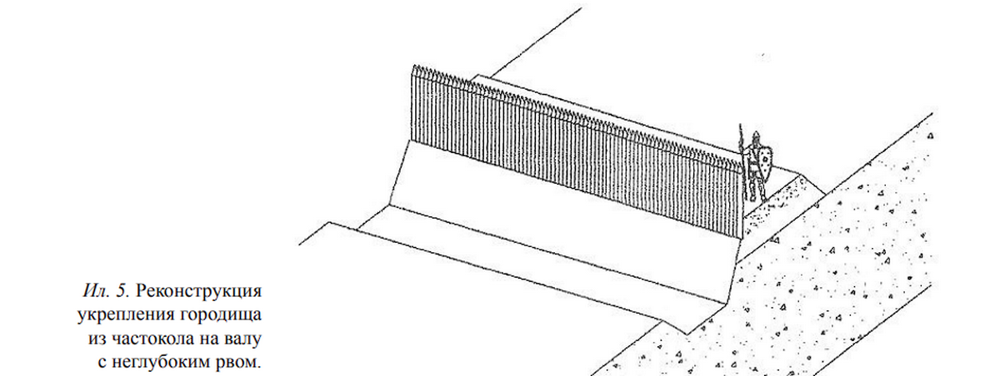
Русские земляные ограды в первоначальном своем виде были такие же, как и в Западной Европе, т. е. состояли из вала со рвом впереди. Их сила заключалась в значительной высоте вала, такой же глубине рва и труднодоступной крутизне отлогостей. По уцелевшим старинным земляным оградам и основываясь на официальных актах, историки указывают на высоту валов до 21 м и глубину рвов в 10,5 м. Пределом наименьшей толщины вала в его верхней части считалось 1,3 м. Размеры рва согласовались с количеством земли, потребной на вал, большей частью они были глубокие и узкие, а для затруднения приступа отлогости рва делались возможно крутыми.
Наиболее характерным типом древних русских оград являются деревянные ограды, начавшие входить в употребление с IX века. Обильный материал для их устройства давали громадные леса древней Руси. Деревянные ограды разделялись на тыновые и венчатые; первые состояли из палисада с бойницами или с банкетом; вторые — из срубов.
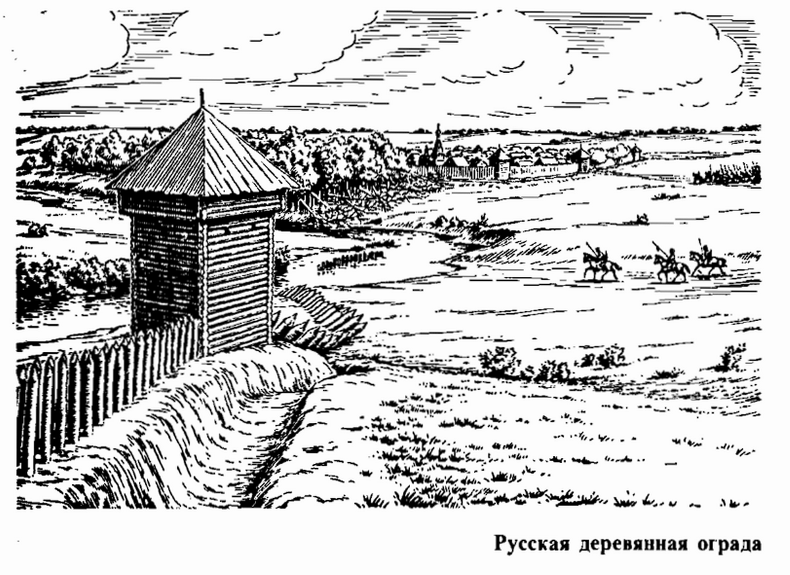
Простые земляные ограды были единственным первобытным средством защиты у славян до половины IX века. В летописях эти первобытные ограды назывались спом, приспом, переспом — от слова «сыпать»; позже их стали называть осыпью.
Оборонительным оградам летописцы давали иногда названия: оплота, плота; внутренние ограды называли днешним градом, детинцем, а позднее — кремлем. Название детинец происходит от слова «девать», «деть», т. е. укрыть; при угрожающей городу опасности жители прятали в детинце все, что им было дорого, между прочим детей, жён, старцев. Слово «кремль» означает по-татарски крепость. Детинец, или кремль, играл роль цитадели или последнего убежища. Огромное значение придавалось обеспечению кремля, прежде всего – водоснабжению. Этому служили тайники: изначально - скрытые места на берегу реки, откуда жители, пробравшись из крепости по подземным галереям, набирали воду. Над тайниками частно устраивали башни для обеспечения их защиты. Башни в древней Руси назывались «вежами» ( от слова «ведати» - знать, видеть), «столпами», «кострами» (от слова castrum - замок), «стрельницами». Сам термин «башня» вошел в обиход лишь в XVI веке в трудах Курбского и с тех пор стал распространенным.
Они появились в России XI веке. Древнейшими и наиболее замечательными памятниками русских каменных отряд являются: ограда Киева, заложенная Ярославом в 1037 г., ограда Новгородского кремля, стена Китай-города в Москве, Смоленские стены, стены гг. Коломны, Порхова и Пскова. Каменные ограды строились из естественных камней или из кирпича, или из обоих этих материалов вместе; в последнем случае либо нижнюю часть стены выводили из тесаного камня, а остальную часть из кирпича, либо средняя толща стены состояла из булыжного камня, а две стороны, наружная и внутренняя, облицовывались кирпичом.
Внутреннее пространство городов, ограниченное оборонительными оградами, было всегда чрезвычайно просторно по сравнению с числом жителей, составлявших постоянное их население. В городах оставляли поэтому пустые места, служившие окрестным жителям убежищем при нашествии неприятеля; на этих пустых местах зажиточные жители строили жилые строения, известные под именем осадных дворов.
Укрепленные пункты, послужившие родоначальниками крепостей и служившие для охраны Древней Руси от внешних врагов, известны в летописях под названием городов, городков, острогов и острожков. Слово «крепость» появилось в официальных актах с XVII ст. и первоначально употреблялось вообще в смысле частного укрепления или оборонительных средств, усиливающих укрепляемые пункты, иногда же и в современном его значении. Иногда слово «крепость» заменялось словом «крепь» или «креп», означавшим искусственные преграды.
Издавна крепостью назывался важный в военном отношении укрепленный пункт с долговременными оборонительными сооружениями, в котором находился постоянный гарнизон, вооруженный и обеспеченный всем необходимым для длительной борьбы в условиях осады.
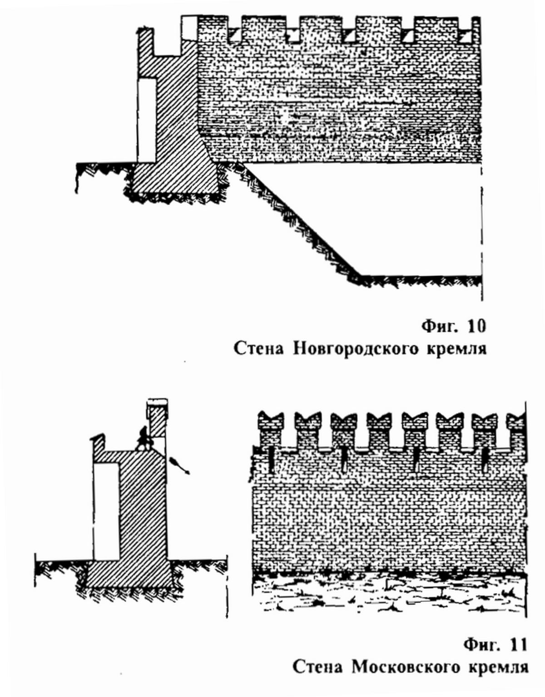
Деревянное или каменное возвышение (на крепостном валу, бруствере, у окон крепости), где размещались стрелки
Отверстие в оборонительном сооружении, в стене здания для ведения огня из артиллерийского и стрелкового оружия
Земляная насыпь для обороны
Старинное оборонительное сооружение в виде частокола из толстых брёвен, досок, заострённых кверху
Длинное углубление, вырытое в земле
Деревянная ограда без просветов, составленная из вертикальных кольев, брёвен или жердей
Источники:
Яковлев В.В. “История крепостей”. — М.: ООО «Фирма «Издательство АСТ»; СПб.: ООО «Издательство Полигон», 2000. — 400 с., ил. (20-37 стр.)
УДК: 904:72(477-25)«08/12» Вадим Лукьянченко “ГОРОДНИ – ОБОРОННЫЕ СТЕНЫ КИЕВА IX–XIII вв.”
УДК 93 : 711 Дюков Илья Вячеславович “ГРАДОСТРОИТЕЛЬСТВО РУСИ В XI–XV ВВ.”
В. И. Плужников “Термины российского архитектурного наследия”